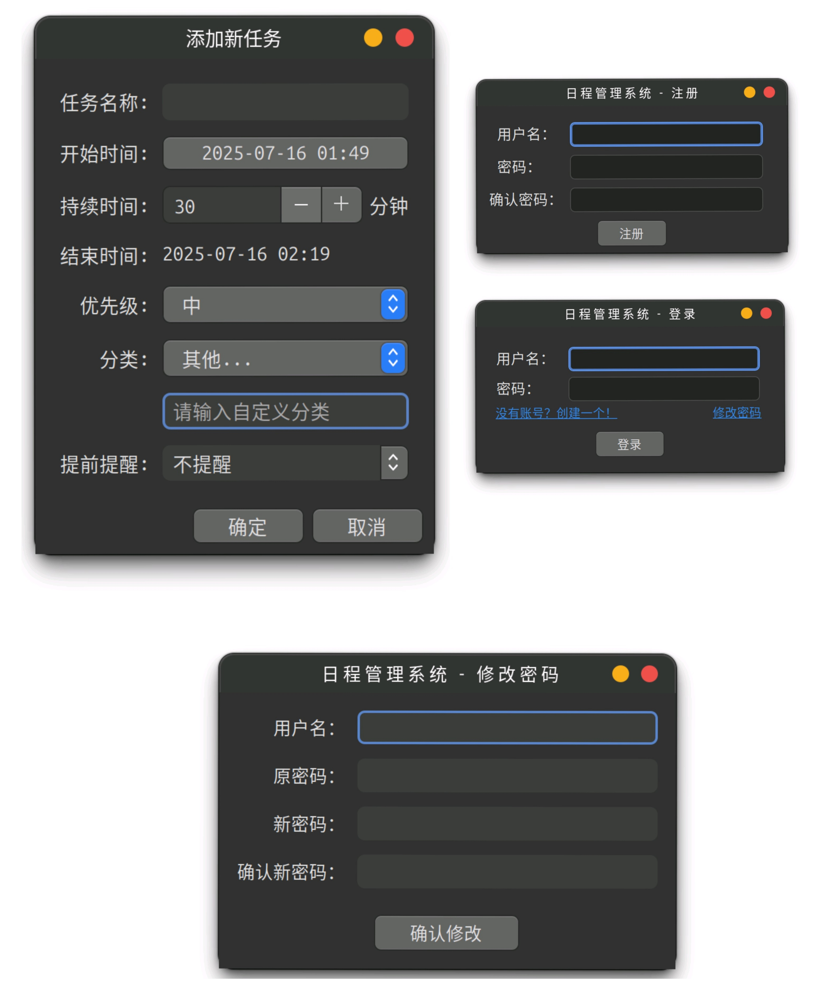
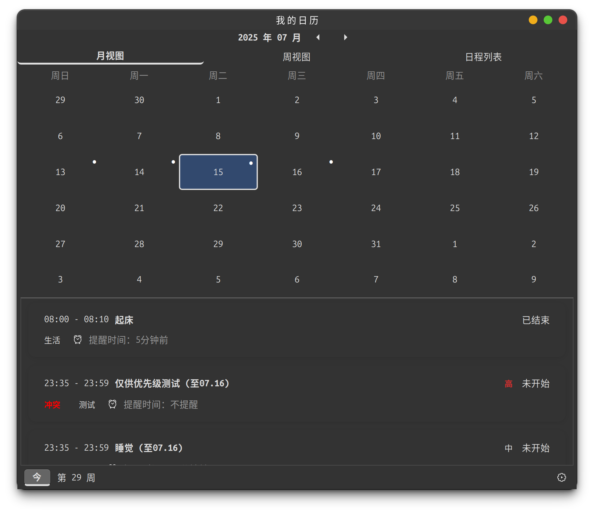
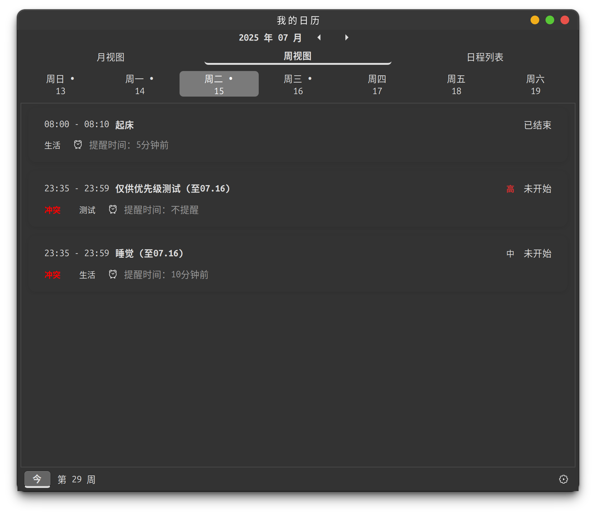
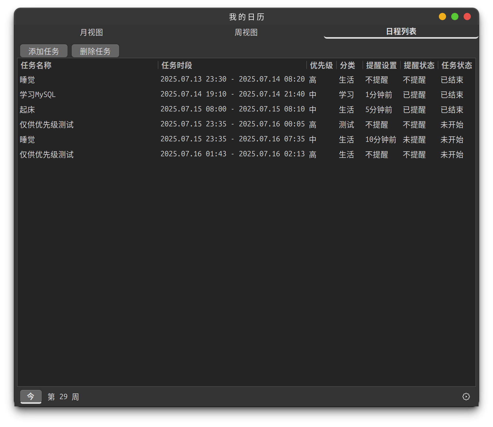

本项目是一个基于C++和GTK+的桌面日程管理应用，提供用户管理、任务管理、提醒功能等核心功能。应用支持多种视图模式（月视图、周视图、日程列表），具有完整的用户认证系统和系统托盘集成。
| 姓名 | 学号 | 负责模块 |
|---|---|---|
| 黄俊艺 | 524031910360 | 前端界面开发、任务管理系统、用户管理系统、数据持久化和文件操作 |
| 王博宇 | 524031910423 | MD5加密模块、密码验证逻辑、后台提醒系统 |
负责人： 黄俊艺
负责人： 黄俊艺、王博宇
负责人： 王博宇




1SchedulerApp2├── GUI层（GTK+ Widgets）3├── 业务逻辑层（TaskManager, UserManager）4├── 数据层（文件存储）5└── 工具层（时间处理、格式化等）
职责： 应用程序主类，继承自Gtk::Application
核心功能：
职责： 任务管理核心类
核心功能：
职责： 用户管理系统
核心功能：
xxxxxxxxxx121struct Task {2 long long id;3 string name;4 time_t startTime;5 int duration;6 Priority priority;7 Category category;8 string customCategory;9 string reminderOption;10 time_t reminderTime;11 bool reminded;12};xxxxxxxxxx161struct TaskSegment {2 long long id;3 string name;4 time_t original_start;5 time_t original_end;6 time_t display_start;7 time_t display_end;8 Priority priority;9 Category category;10 string customCategory;11 string reminderOption;12 bool is_cross_day;13 bool is_first_segment;14 bool has_conflict;15 bool is_highest_priority_in_conflict;16};xxxxxxxxxx51enum class Priority {2 HIGH, // 高优先级3 MEDIUM, // 中优先级4 LOW // 低优先级5};xxxxxxxxxx61enum class Category {2 STUDY, // 学习3 ENTERTAINMENT, // 娱乐4 LIFE, // 生活5 OTHER // 其他（自定义）6};xxxxxxxxxx51enum class ViewMode {2 MONTH, // 月视图3 WEEK, // 周视图4 AGENDA // 日程列表5};问题描述： 任务可能跨越多天，需要在不同日期的视图中正确显示。
解决方案：
TaskSegment结构体将跨天任务分割成多个片段xxxxxxxxxx61// 关键代码示例2if (segment.is_cross_day && !segment.is_first_segment) {3 display_name = segment.name + " (续)";4} else if (segment.is_cross_day && segment.is_first_segment) {5 display_name = segment.name + " (至" + end_date + ")";6}问题描述： 多个任务时间重叠时需要检测冲突并高亮显示。
解决方案：
tasks_overlap()函数检测时间重叠sort_tasks_with_conflicts()进行冲突感知排序xxxxxxxxxx51// 冲突检测逻辑2bool SchedulerApp::tasks_overlap(const TaskSegment &task1, const TaskSegment &task2) {3 return task1.display_start < task2.display_end && 4 task1.display_end > task2.display_start;5}问题描述： 提醒功能需要在后台独立运行，不能阻塞主界面。
解决方案：
Glib::signal_idle()将提醒回调传递到主线程xxxxxxxxxx71// 提醒回调示例2m_task_manager.setReminderCallback([this](const string &title, const string &msg) {3 Glib::signal_idle().connect_once([this, title, msg]() {4 this->show_message(title, msg);5 this->update_all_views();6 });7});问题描述： 应用关闭后需要在系统托盘中保持运行。
解决方案：
libayatana-appindicator库实现系统托盘xxxxxxxxxx51// 托盘设置示例2indicator_ = app_indicator_new(3 "scheduler-app",4 "indicator-messages",5 APP_INDICATOR_CATEGORY_APPLICATION_STATUS);问题描述： 用户数据和任务数据需要持久化存储。
解决方案：
问题描述： 需要处理各种时间格式转换和本地化显示。
解决方案：
time_t作为内部时间表示xxxxxxxxxx71// 时间格式化示例2string time_t_to_datetime_string(time_t time) {3 if (time == 0) return "N/A";4 char buffer[20];5 strftime(buffer, sizeof(buffer), "%Y-%m-%d %H:%M", localtime(&time));6 return buffer;7}问题描述： GTK+应用需要正确管理控件内存。
解决方案：
Gtk::make_managed()创建控件问题描述： 复杂的用户交互需要高效的事件处理。
解决方案：
xxxxxxxxxx121SchedulerApp/2├── src/3│ ├── SchedulerApp.cpp4│ ├── SchedulerApp.h5│ ├── TaskManager.cpp6│ ├── TaskManager.h7│ ├── UserManager.cpp8│ └── UserManager.h9├── GUIDesign.xml10├── CMakeLists.txt11├── 设计文档.12└── README.md
本日程管理应用通过模块化设计和现代C++技术，实现了完整的桌面日程管理功能。关键创新点包括跨天任务处理、智能冲突检测、多线程提醒系统等。应用具有良好的用户体验和系统集成能力，可以满足日常办公和学习的日程管理需求。